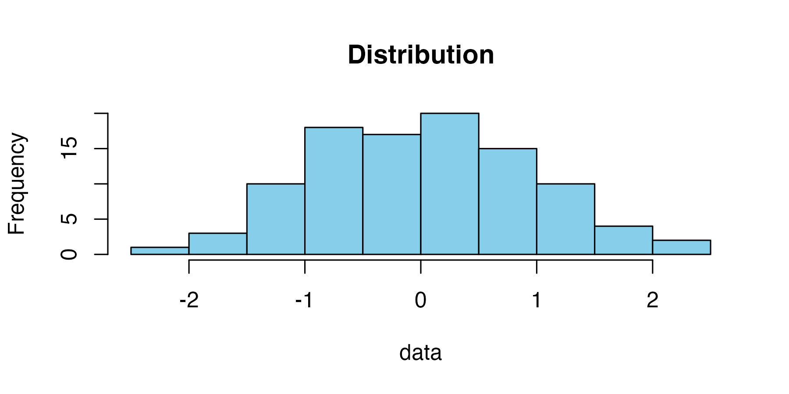

Markdown文法の基礎
1 Markdownによる文書構造
1.1 文字の装飾と強調
文章の一部を強調したい場合、以下のような記法が使えます。
- 太字（Bold）: ローマ字以外の強調に使います。
- イタリック（Italic）: ローマ字の強調に使います。
取り消し線（Strike）: 削除された情報を表現します。- 下線（Underline）: HTMLタグを使って表現します。
1.2 リストの作成
1.2.1 順序なしリスト（箇条書き）
項目の並列な羅列に使います。インデント（字下げ）で階層化できます。
- データ分析の準備
- データの収集
- データの整形
- 欠損値の処理
- 異常値の確認
- 分析の実行
1.2.2 順序ありリスト（番号付き）
手順やランキングなど、順序が重要な場合に使います。
- RStudioを開く
- プロジェクトを作成する
- New Projectを選択
- ディレクトリを指定
- Quartoファイルを作成する
1.2.3 タスクリスト
進捗管理などに便利です。
1.3 リンクと脚注
外部サイトへの誘導にはリンクを使います。Quartoの公式ドキュメントなどは頻繁に参照します。 また、本文の流れを妨げずに補足情報を入れたい場合は、脚注を利用します1。
識別子を使った脚注も可能です2。
2 高度なレイアウト表現
2.1 表の作成
Markdownで表を作成するには、パイプ（|）とハイフン（-）を使用します。コロン（:）の位置で配置を指定できます。
| ID | 名前 | スコア | 備考 |
|---|---|---|---|
| 1 | 佐藤 | 95 | 右寄せ・左寄せの例 |
| 2 | 田中 | 82 | 強調も可能 |
| 3 | 鈴木 | 100 | 中央揃え |
2.2 画像の埋め込みとサイズ調整
画像の表示サイズは width や height オプションで制御できます。
標準サイズ:

サイズ指定（幅75pxに縮小）:
2.3 数式の記述
レポートに数式を含める場合、LaTeX記法が使えます。
文中の数式（インライン）:
回帰分析のモデルは \(y = \beta_0 + \beta_1 x + \varepsilon\) で表されます。
独立した数式ブロック（ディスプレイ）:
\[ f(x) = \frac{1}{\sqrt{2\pi\sigma^2}} \exp\left( -\frac{(x-\mu)^2}{2\sigma^2} \right) \]
2.4 複数コンテンツのレイアウト
layout-ncol 属性を使うと、画像や表を横に並べて配置できます。比較を行う際に非常に強力です。
2.4.1 グループA
| 項目 | 値 |
|---|---|
| 平均 | 50 |
| 分散 | 10 |
2.4.2 グループB
| 項目 | 値 |
|---|---|
| 平均 | 65 |
| 分散 | 15 |
3 Rコードの挿入
Quartoの最大の特徴は、ドキュメント内でRのコードを実行し、その結果を直接ドキュメントに反映できる点です。
3.1 基本的なコード実行
以下は標準的なコードチャンクです。コードと結果の両方が表示されます。
# 1から10までの整数の合計を計算
x <- 1:10
sum(x)[1] 55インラインコード:
文章の中に計算結果を埋め込むこともできます。 例えば、計算された合計値は55です。
3.2 チャンク・オプション
目的に応じて、コードや結果の表示・非表示を切り替えられます。チャンクオプションはチャンクの最上段に#| オプション名: 引数の書き方で記入します。チャンク・オプションは複数指定することができます。
ケース1: 結果だけ見せたい (echo: false)
読者にコードを見せる必要がなく、グラフや表だけを示したい場合に使います。

ケース2: コードだけ見せたい（eval: false）
実行に時間がかかるコードや、解説用のコードを示す場合に便利です。
# このコードは表示されますが、実行はされません
install.packages("very_heavy_package")
start_simulation()ケース3: コードと結果をまとめる（collapse: true）
Rコンソールのように、コードと出力結果を一つのブロックにまとめます。
print("Hello, Quarto!")
## [1] "Hello, Quarto!"
mean(c(10, 20, 30))
## [1] 203.3 エラー処理
通常、コードにエラーがあると文書生成（レンダー）は止まりますが、error: trueを指定しておくと、エラーメッセージを表示して処理を続行します。デバッグ内容をレポートする場合に使います。
# 存在しない変数を呼び出してみる
print(undefined_variable)Error:
! object 'undefined_variable' not found4 チャンクの表示
```{r}の代わりに```{r}を使用すると、チャンクごとに表示されます。ただし、チャンク内のコードは実行されません。Quarto教育用の教材作成時以外はあまり出番がないかも知れません。
```{r}
print("Hello, Quarto!")
```マークダウン文書のコードとチャンクを同時に入れるためには、されに````{.markdown}と````で囲みます。
- マークダウンのコードを見せる。
- チャンクもそのまま見せる
```{r}
print("Hello, Quarto!")
```5 図表の高度な配置
図のキャプション、参照、そして複雑なレイアウト設定について学びます。
5.1 図の参照とキャプション
チャンクオプションでfig-cap（キャプション）とlabel（ラベル）を設定すると、本文中で「図1を参照」のように自動採番付きで参照できます。
以下の 図 1 をご覧ください。
plot(cars, pch=19, col="darkorange")5.2 サブキャプションと並列配置
一つのチャンクから複数のグラフを出力し、それぞれにサブキャプションを付けることもできます。
gt::gt(head(iris[iris$Species == "setosa", 1:4]))
gt::gt(head(iris[iris$Species == "virginica", 1:4]))| Sepal.Length | Sepal.Width | Petal.Length | Petal.Width |
|---|---|---|---|
| 5.1 | 3.5 | 1.4 | 0.2 |
| 4.9 | 3.0 | 1.4 | 0.2 |
| 4.7 | 3.2 | 1.3 | 0.2 |
| 4.6 | 3.1 | 1.5 | 0.2 |
| 5.0 | 3.6 | 1.4 | 0.2 |
| 5.4 | 3.9 | 1.7 | 0.4 |
| Sepal.Length | Sepal.Width | Petal.Length | Petal.Width |
|---|---|---|---|
| 6.3 | 3.3 | 6.0 | 2.5 |
| 5.8 | 2.7 | 5.1 | 1.9 |
| 7.1 | 3.0 | 5.9 | 2.1 |
| 6.3 | 2.9 | 5.6 | 1.8 |
| 6.5 | 3.0 | 5.8 | 2.2 |
| 7.6 | 3.0 | 6.6 | 2.1 |
5.3 カスタムレイアウト
layout オプションを使うと、「上段に2つ、下段に1つ」といった複雑な配置も可能です。
指定例: 上段は50%-50%、下段は100%